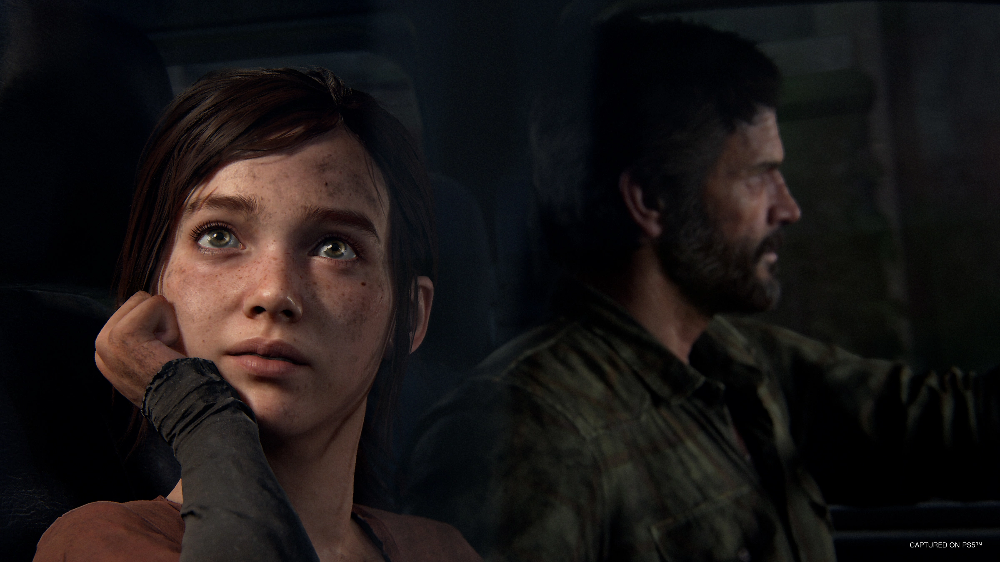
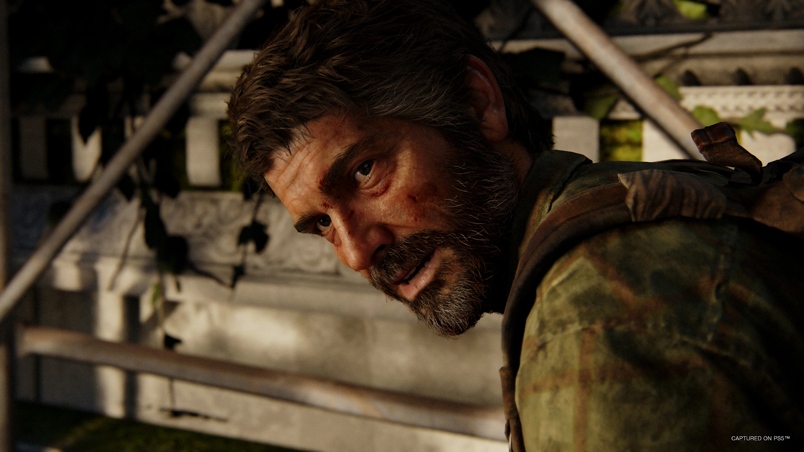

Seja bem vindo(a) ao site de The Last Of Us
Aqui você encontrará informações diversas sobre os jogos e a série. Confira!


"The Last of Us" é um jogo de ação e aventura desenvolvido pela Naughty Dog e lançado originalmente para o console PlayStation 3 em 2013, com uma versão remasterizada para o PlayStation 4 em 2014. O jogo se passa em um mundo pós-apocalíptico, devastado por uma infecção que transformou a maior parte da população em criaturas hostis e violentas.
A história segue Joel, um sobrevivente endurecido que perdeu sua filha no início do surto, e Ellie, uma jovem corajosa que pode ser a chave para encontrar uma cura para a infecção. Os dois embarcam em uma jornada perigosa através dos Estados Unidos, enfrentando não apenas as criaturas infectadas, mas também outros sobreviventes desesperados, enquanto constroem um vínculo emocional um com o outro.
O jogo é conhecido por sua narrativa envolvente e emocional, explorando temas de sobrevivência, sacrifício, moralidade e relacionamentos humanos em um mundo cruel e implacável. Além disso, apresenta jogabilidade de ação furtiva e combate, resolução de quebra-cabeças ambientais e uma ambientação detalhada e atmosférica.

"The Last of Us" recebeu aclamação da crítica por sua história, personagens, dublagem, trilha sonora e jogabilidade, sendo considerado um dos melhores jogos de todos os tempos.
Ele gerou uma sequência intitulada "The Last of Us Part II", lançada em 2020, que continua a história e expande ainda mais o universo do jogo.